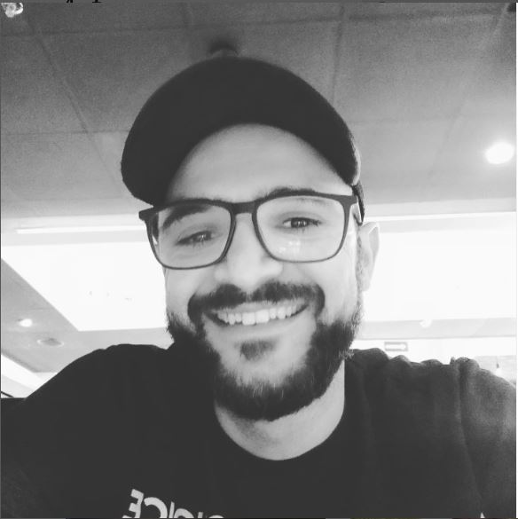
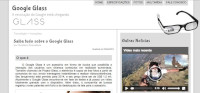
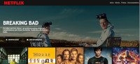
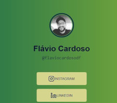

Flávio Cardoso

Olá mundo! Eu sou Flávio Cardoso e essa página que você está visitando é o meu portifólio pessoal. Aqui está contemplado boa parte do meu conhecimeto adquirido ao longo dos meus estudos.
Trabalhei na área administrativa/financeira por mais de 10 anos e sempre gostei da área de tecnologia, mas nunca tive coragem para mudar de área.
Eu, como boa parte da população mundial, sofri consequências do Malware humano no ano de 2020 e com esse obstáculo na minha caminhada, resolvi em 2022 que era a hora de finalmente migrar de área e partir para algo que eu realmente gostasse de fazer.
Hoje estudo para ser Desenvolvedor Front-End.
Experiencias

Meu primeiro projeto foi feito no Curso de HTML e CSS do Curso em Video com o professor Gustavo Guanabara. Foi um projeto introdutório, aprendi muitos conceitos e como todo iniciante, copiei bastante código.
Meu segundo projeto foi replicar a tela de login do Instagram. Esse projeto foi feito no Bootcamp HTML Wed Developes da Digital Innovation One com a professora Gabriela Pinheiro. Era um desafio de nível intermediário para o meu conhecimento a época, pois nele foi aplicado bastante conceito de FlexBox.

Em meu terceiro projeto, clonei a tela inicial da Netflix, mostrando um título princial, com menu de navegação e botões. Neste projeto tive o primeiro contato com JavaScrip, onde foi adicionado ao projeto um carrossel de imagens, onde o usuário poderia escolher o filme/série para assistir. Esse projeto também foi desenvolvido no Bootcamp HTML Wed Developes da Digital Innovation One com o professor Felipe Aguiar. Um projeto bem legal de ser feito e me fez gostar bastante do primeiro contato com o JavaScrip.
Este foi meu quarto projeto. Desenvolvi um formulário, onde ele dava um resposta aleatória para cada pergunta que fosse feita. Foi um projeto desenvolvido em maratona explorer da RocketSeat com o professor Mayk Brito. Foi outro projeto bem divertido de ser feito. Gostei muito dos conceitos apresentados de JavaScrip como If e Else. Deu pra ter uma nocão do que pode ser feito com essa linguagem de programação.

Neste projeto, eu fiz uma página que é um espelho do Linktree. Projeto realizado em mais uma maratona explores da RocketSeat com o professor Mayk Brito. Foi um projeto onde consegui aplicar vários conceitos de CSS.
Este projeto foi realizado no curso Ser Front End com o professor Daniel Tapias Morales. Juntamente com vários outros projetos neste curso, eu consegui me aprofundar bastante em HTML e CSS.
Neste momento eu tenho um conhecimento intermediário em HTML e CSS. Já comecei a estudar JavaScrip e como gostaria de ser um Desenvolvedor Front End, pretendo aprender Vue e/ou React.